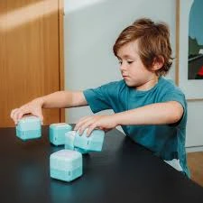

Infinite Cube Toy
Cognitive Benefits of Infinity Cubes
The Creepy Infinite Cube: A Fun and Brain-Boosting Toy for Kids
Introduction
In the world of kids' toys, the Creepy Infinite Cube stands out as a unique and engaging option. This fascinating fidget toy is not only fun to play with but also offers numerous benefits for brain development and learning. In this article, we will explore the various aspects of the Creepy Infinite Cube, highlighting how it can provide a fun and educational experience for children.
What is the Creepy Infinite Cube?
The Creepy Infinite Cube is a 3D-printed fidget toy designed to be manipulated in various ways. Its eerie design adds an element of intrigue, making it especially appealing to kids who love all things spooky. The cube can be folded and unfolded endlessly, providing a satisfying tactile experience. Experience creative ways of playing with our magic swords.
Features:
- 3D Printed: Made using advanced 3D printing technology.
- Endless Folding: Can be folded and unfolded in multiple ways.
- Creepy Design: Features a unique, spooky aesthetic.
The Benefits of Fidget Toys
Fidget toys like the Creepy Infinite Cube are more than just fun gadgets. They offer several benefits that can aid in a child's development.
Benefits:
- Stress Relief: Helps reduce anxiety and stress by providing a calming activity.
- Focus and Concentration: Improves attention span and concentration, especially in children with ADHD.
- Fine Motor Skills: Enhances hand-eye coordination and dexterity.
Brain Activities with the Creepy Infinite Cube
Playing with the Creepy Infinite Cube can stimulate various brain activities, contributing to cognitive development.
Activities:
- Problem-Solving: Figuring out different ways to manipulate the cube encourages problem-solving skills.
- Spatial Awareness: Understanding how the cube folds and unfolds helps develop spatial awareness.
- Memory: Remembering different folding patterns can improve memory retention.
Fun Learning Experience
The Creepy Infinite Cube offers a fun and interactive way for kids to learn new skills. Its unique design and endless possibilities make it an excellent tool for educational play.
Learning Through Play:
- Creativity: Encourages creative thinking as kids come up with new ways to play with the cube.
- Patience: Teaches patience and perseverance as children work through different folding patterns.
- Logical Thinking: Enhances logical thinking by challenging kids to figure out the mechanics of the cube.
How to Incorporate the Creepy Infinite Cube into Learning
Parents and educators can use the Creepy Infinite Cube as a tool for various learning activities.
Ideas:
- Math Lessons: Use the cube to teach concepts like geometry and symmetry.
- Storytelling: Incorporate the cube into storytelling sessions, using its creepy design to spark imagination.
- Science Projects: Discuss the 3D printing process and how the cube is made.
The Importance of Play in Child Development
Play is a crucial aspect of a child's growth and development. It helps them learn new skills, express themselves, and understand the world around them. The Creepy Infinite Cube combines play with learning, making education a fun and engaging process.
Benefits of Play:
- Cognitive Development: Enhances problem-solving skills and critical thinking.
- Social Skills: Playing with the cube can be a social activity, teaching kids to share and collaborate.
- Emotional Growth: Creative play allows children to express their emotions and build self-confidence.
Tips for Parents: Maximizing the Benefits of the Creepy Infinite Cube
Parents can enhance the learning experience by incorporating the Creepy Infinite Cube into various activities. Here are some tips to get started:
- Interactive Play: Spend time playing with the cube alongside your child, encouraging them to explore different ways to manipulate it.
- Themed Learning: Use the cube to create themed lessons, such as a day dedicated to learning about shapes and patterns.
- Storytime: Combine the cube with storytelling. For example, create a spooky story involving the cube's creepy design.
- Craft Projects: Use the cube for non-fidget activities, such as tracing its shapes onto paper for coloring or using it as a stencil for painting.
- Celebrate Achievements: Praise your child's efforts and creations, whether it's a new folding pattern or a creative story involving the cube.
Conclusion
The Creepy Infinite Cube is a fantastic toy that offers a blend of fun and educational benefits. Its unique design and endless possibilities for play make it a hit with kids and parents alike. By incorporating the cube into various learning activities, parents can help their children develop important skills while having a great time. So, the next time you're looking for a fun and brain-boosting toy, consider the Creepy Infinite Cube and watch your child's imagination and cognitive abilities soar!